Jmenuji se Milan Hubený a již více než 30 let působím jako malíř a zedník v Praze a jejím okolí. Maluji byty, pokoje a kanceláře, natírám fasády, opravuji a štukuji stěny a provádím drobné zednické úpravy. Každou zakázku realizuji osobně, bez subdodavatelů, za cenu domluvenou předem po bezplatné prohlídce – bez skrytých a nečekaných poplatků.
Dvě řemesla, jeden kontakt. Malířské i zednické práce v Praze a okolí vyřeším osobně od začátku do konce – bez nutnosti shánět dalšího řemeslníka.
Od nezávazné poptávky po hotovou práci. Takhle probíhá každá zakázka, ať jde o výmalbu bytu v Praze, nebo o drobnou zednickou opravu.
Napíšete nebo zavoláte, popíšete, co potřebujete udělat, a domluvíme další postup.
Přijedu se podívat na místo, upřesníme rozsah práce a navrhnu nejlepší řešení.
Dostanete jasnou cenu a termín realizace předem – bez nepříjemných překvapení.
Práci provedu osobně, čistě a v dohodnutém termínu.
Jmenuji se Milan Hubený a již více než 30 let pomáhám lidem v Praze a okolí tvořit domovy, do kterých je radost se vracet – jako malíř i jako zedník. Specializuji se na malování, zednické práce a drobné úpravy bytů, pokojů a domů – vše provádím osobně, pečlivě a s důrazem na čistý výsledek.
Zakládám si na poctivém přístupu, dodržování domluvených termínů a férové ceně bez nepříjemných překvapení na konci zakázky. Pomáhám nejen domácnostem, ale také firmám s úpravami jejich prostor.
Zakázky realizuji jako malíř a zedník v Praze a okolí. Nejčastěji pracuji pro zákazníky z Prahy 1 až Prahy 22, ale dojíždím i do okolních obcí ve Středočeském kraji – vzdálenost vždy raději upřesníme předem při telefonátu nebo zprávě.
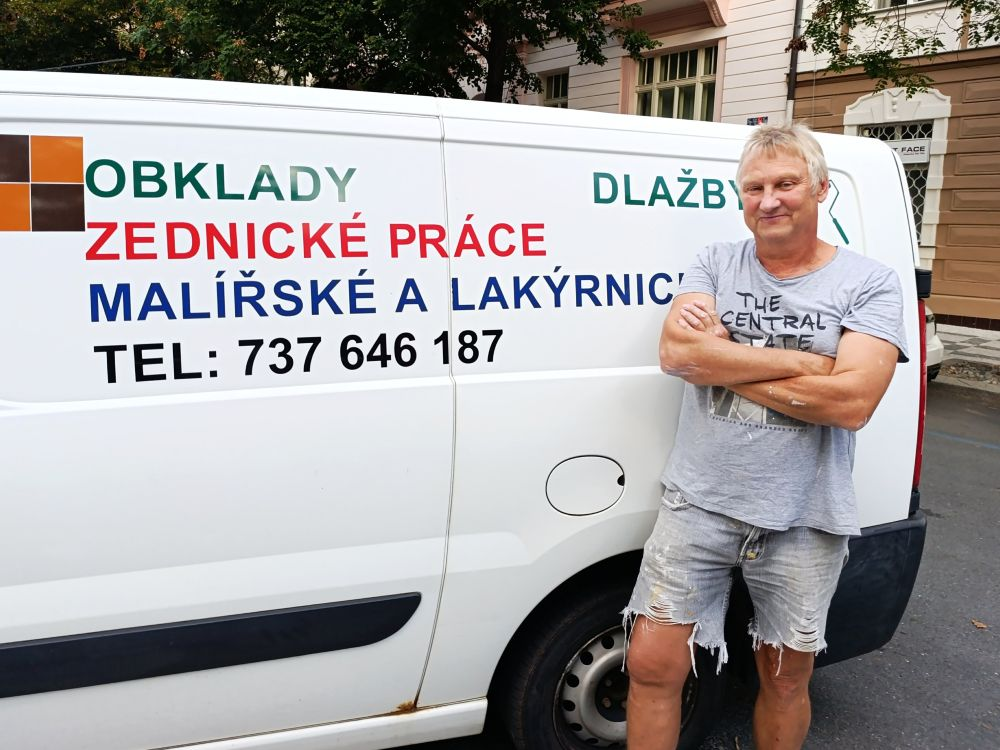
Cenu každé zakázky stanovuji individuálně – záleží na rozsahu práce, stavu prostoru i použitých materiálech. Za malířské i zednické práce v Praze a okolí účtuji od 400 Kč za hodinu. Nejdříve se ale přijedu zdarma podívat, probereme vaše představy a připravím konkrétní cenovou nabídku.
Ukázky z dokončených zakázek – oprava posprejované fasády, výmalba bytů, obklady, dlažby a zednické úpravy v Praze.
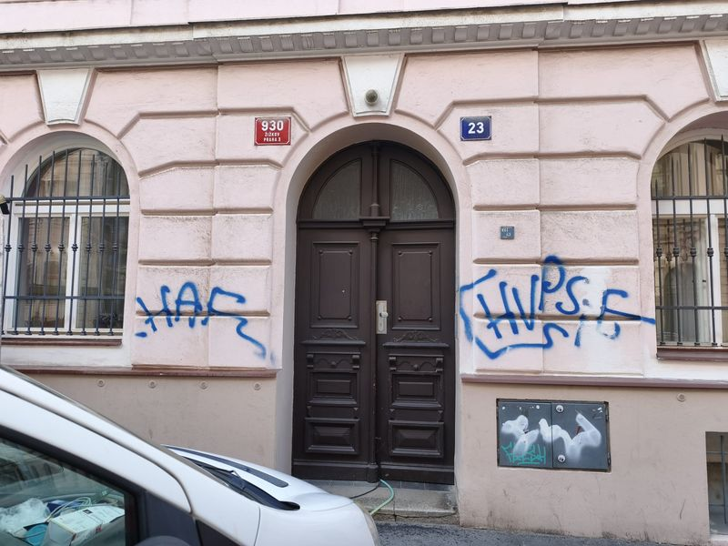
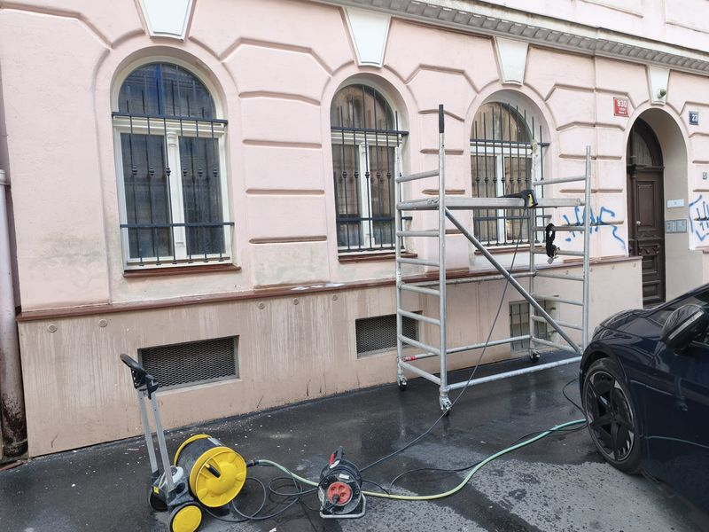
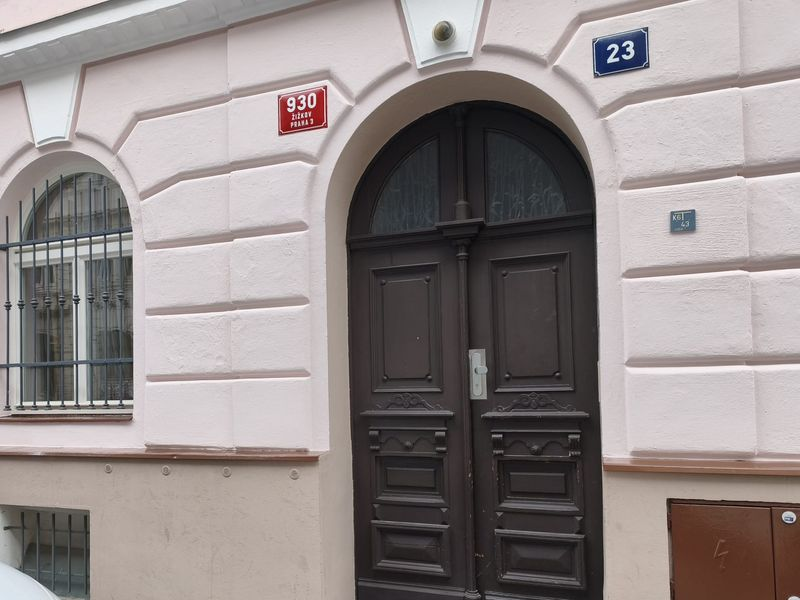
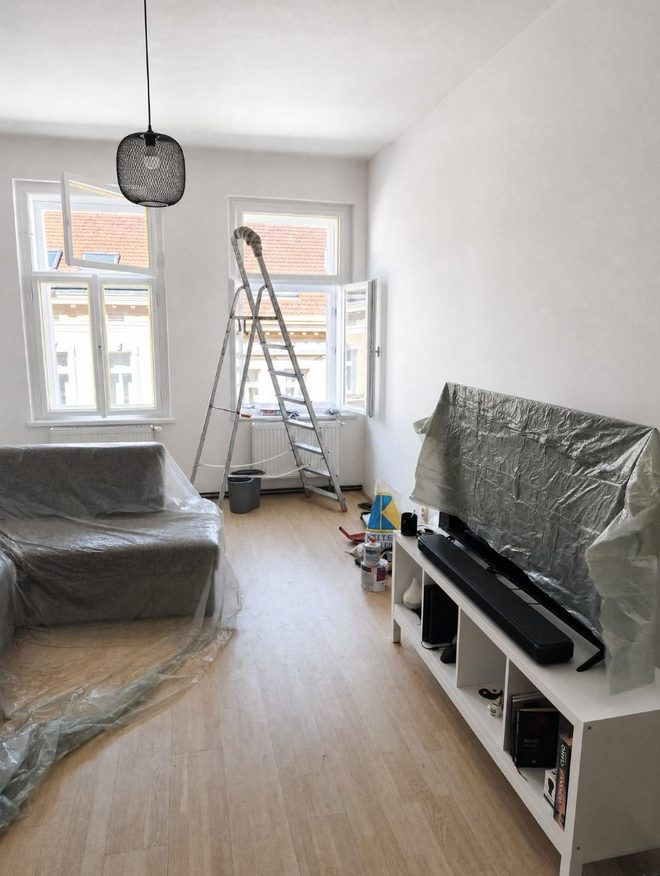
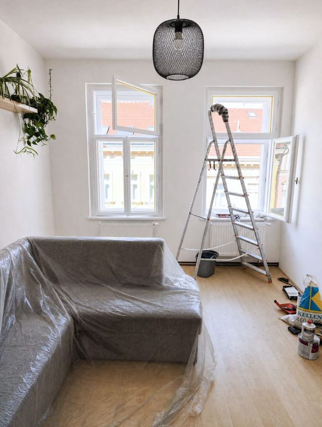
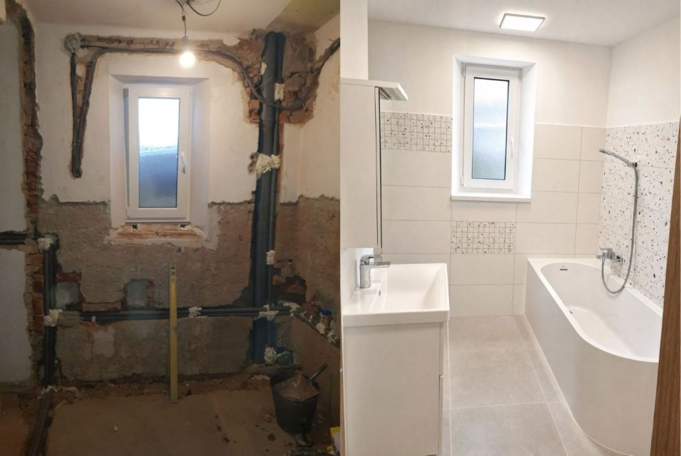
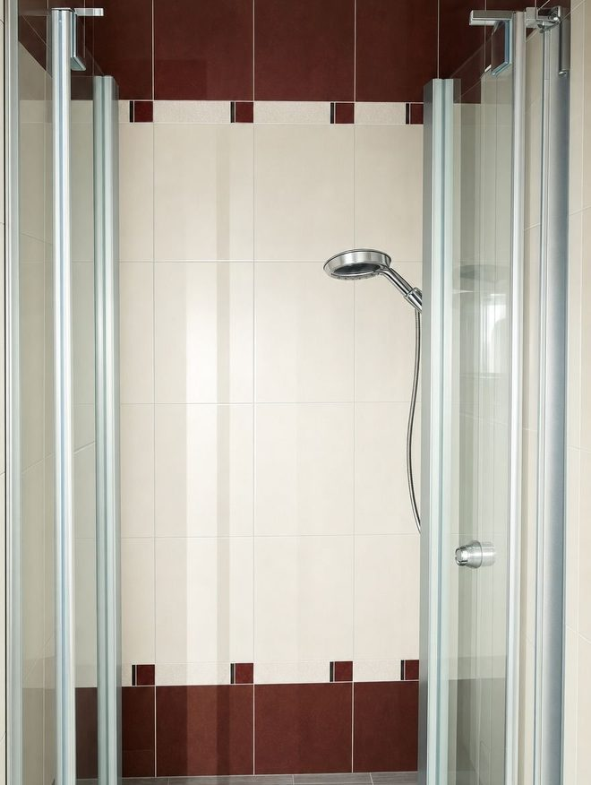
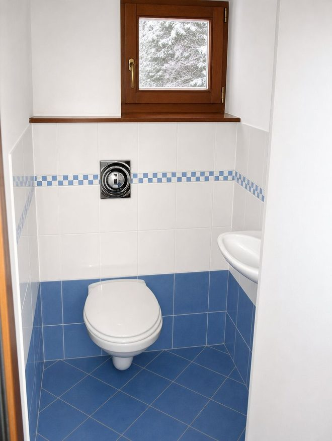
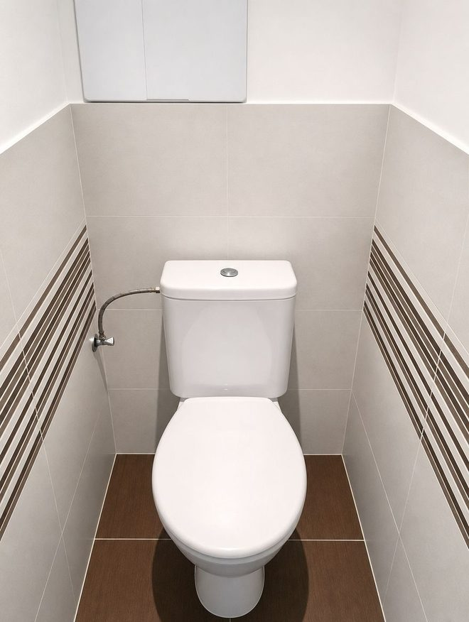
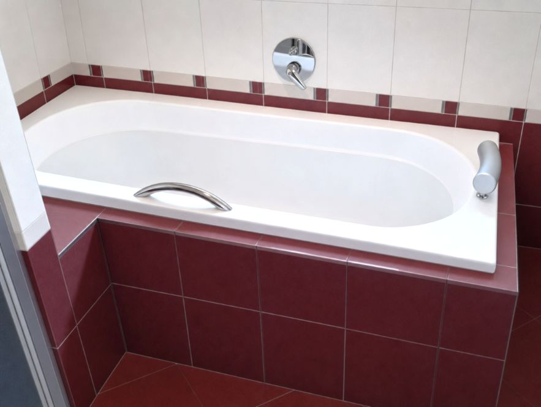
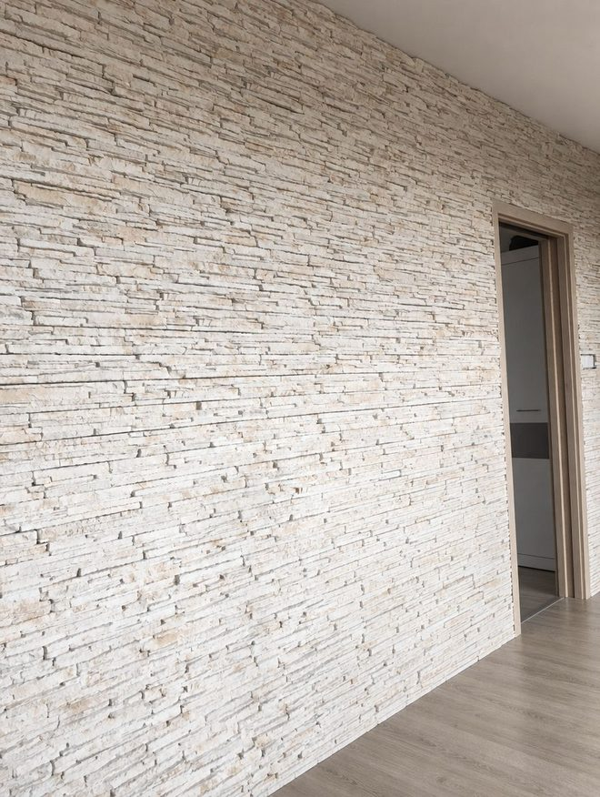
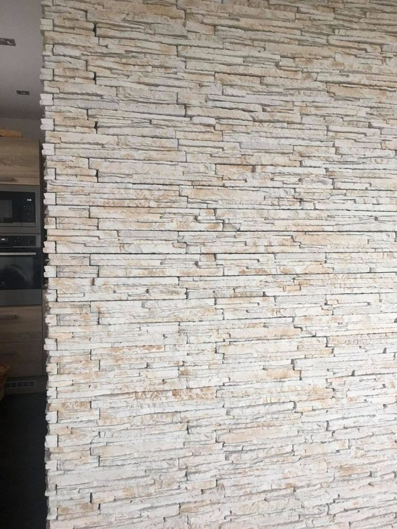
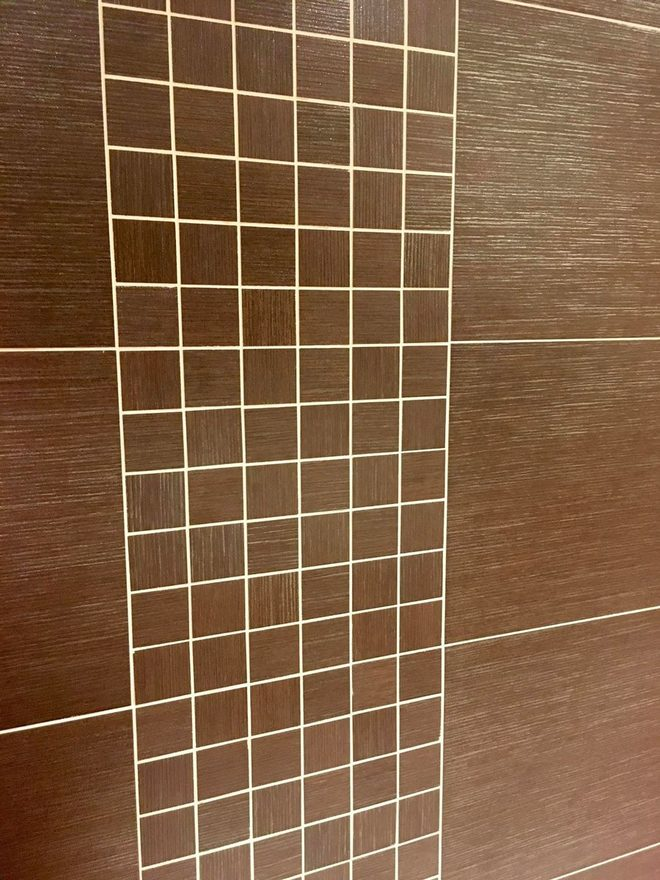
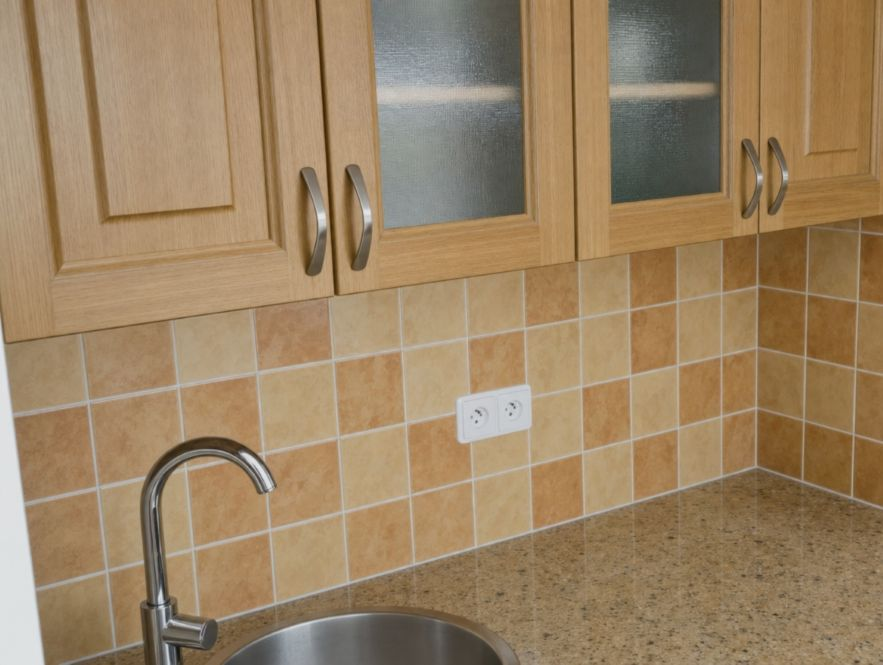
Odpovědi na nejčastější otázky, které řešíte předtím, než si domluvíte malíře nebo zedníka.
Práce se účtuje od 400 Kč za hodinu, což je u malířských i zednických prací běžná sazba. Celková cena za vymalování bytu ale bývá vyšší než jen počet hodin krát hodinová sazba – vstupuje do ní i materiál, příprava podkladu, zakrytí a přesun nábytku.
Orientačně se vymalování bytu v Praze pohybuje takto, včetně práce i běžného materiálu a dvou nátěrů:
Všechny uvedené částky jsou pouze orientační odhad, nikoliv cenová nabídka. Reálná cena může být i vyšší – závisí na stavu stěn, výšce stropů, potřebě dalších úprav podkladu a na požadovaných materiálech (omyvatelné a prémiové barvy jsou dražší než standardní bílá malba).
Přesnou cenu určím až po prohlídce na místě. Prohlídka a nezávazná cenová nabídka jsou zdarma.
Za malířské i zednické práce účtuji od 400 Kč za hodinu. Většina malířů ale nefakturuje po hodinách – běžnější je cena za metr čtvereční, protože zákazník tak dopředu ví, na čem je. V přepočtu to u běžné bílé malby se dvěma nátěry odpovídá orientačně 45 až 75 Kč za metr čtvereční včetně materiálu.
Plochu k malování přitom většina lidí podceňuje. U bytu s běžnou výškou stropu 2,6 m je to přibližně trojnásobek podlahové plochy, protože se počítá i strop. U starších domů v centru a širším centru Prahy, kde jsou stropy vysoké i přes tři metry, to může být i čtyřnásobek. U bytu 2+kk o 50 m² tak vychází orientačně 150 až 200 m² k vymalování.
Uvedené sazby i přepočty berte jako orientační – slouží k tomu, abyste si dokázali udělat představu, ne jako konečnou cenu. Pracuji sám, bez subdodavatelů a bez provize zprostředkovatele. Kolik vyjde konkrétní byt, závisí na jeho velikosti a stavu stěn – přesnou cenu řeknu po bezplatné prohlídce.
Nejvíc stav stěn. Hladká stěna v dobrém stavu se jen zakryje a natře. Pokud se stará malba sype nebo ji je potřeba oškrábat, přidá se penetrace, tmelení prasklin a dírek po kotvách nebo přestěrkování – každý z těch kroků je práce i materiál navíc.
Dál cenu posouvá:
Právě kvůli těmto vlivům jsou všechny ceny uváděné na tomto webu orientační. Cenu proto neříkám po telefonu – při bezplatné prohlídce je za pár minut vidět, co stěny potřebují, a cenová nabídka pak platí.
Materiál mohu zajistit já, včetně výběru vhodné barvy a potřebného množství, abyste se o nic nemuseli starat. Pokud už máte vlastní materiál zakoupený, samozřejmě ho můžeme použít. Stejně tak není problém pracovat s konkrétní značkou nebo odstínem podle vašich představ.
U běžných zakázek se platí až po dokončení práce. U větších realizací se může domluvit záloha na materiál a zbytek částky po dokončení a předání zakázky. Konkrétní podmínky vždy předem upřesníme v cenové nabídce.
Úplné vyklizení bytu většinou není potřeba. Nábytek stačí přesunout do středu místnosti a zakrýt fólií, stejně jako podlahy a lišty. Při prohlídce společně domluvíme, co je potřeba připravit před začátkem práce.
Ano. Praskliny, poškozený povrch nebo nerovné stěny opravím ještě před samotným malováním, takže výsledný nátěr vydrží déle a vypadá lépe. Tuto kombinaci zvládnu v rámci jedné zakázky bez nutnosti shánět dalšího řemeslníka.
Standardně pracuji v pracovní dny. O víkendech je možné se domluvit individuálně, například pokud potřebujete dokončit práce v konkrétním termínu nebo máte omezené časové možnosti.
Ne vždy. Pokud starý nátěr pevně drží a nepráší se, není nutné ho kompletně odstraňovat. Většinou stačí povrch očistit, lehce přebrousit a připravit pro nový nátěr. Škrábání je potřeba hlavně tam, kde se barva odlupuje, praská, je na stěně příliš mnoho starých vrstev nebo se chystá nový štuk či tapetování.
Drobné vlasové praskliny vzniklé například sesedáním stavby nebo změnami teplot se dají běžně opravit zatmelením, přebroušením a novým nátěrem. Širší, hlubší nebo postupně se zvětšující praskliny je potřeba nejdříve posoudit, protože mohou upozorňovat na větší problém.
Právě u těchto oprav je výhodou spojení malířských a zednických prací na jednom místě – opravím poškozený povrch i následný finální nátěr v rámci jedné zakázky.
Malíř se stará především o malování, nátěry, štukování povrchů, tapetování a drobné opravy stěn. Pokud je potřeba vyrovnat větší nerovnosti, opravit poškozené zdivo, udělat sádrokarton, obklady nebo jiné stavební úpravy, přichází na řadu zednické práce.
Výhodou je, že mnoho běžných oprav zvládnu spojit v rámci jedné zakázky – například opravu prasklé zdi, přípravu povrchu i následné vymalování.
Záleží na tom, co je uvedené v nájemní smlouvě — pronajímatel po vás většinou může vymalování žádat jako součást běžné údržby, zejména při delším nájmu. Konkrétní podmínky je vždy potřeba ověřit přímo ve smlouvě, případně s právní poradnou.
Ano, posprejované i jinak poškozené fasády opravuji v Praze a okolí. Samotné smytí graffiti přitom většinou nestačí – barva ze spreje se vsákne do omítky a i po vyčištění po ní zůstává stín.
Postup je proto dvoufázový. Nejdřív očištění tlakovou vodou, u odolnějších nápisů s přípravkem na odstranění graffiti. Pak oprava poškozené omítky a nový fasádní nátěr celé dotčené plochy, aby nebyl vidět přechod mezi vyčištěným a původním místem. U přízemí a soklu, kde graffiti vzniká nejčastěji, se práce zvládne z pojízdného lešení – není nutné stavět lešení kolem celého domu.
Cena závisí na velikosti plochy, typu omítky a na tom, jak hluboko se barva vsákla. Přesnou cenu řeknu po bezplatné prohlídce na místě. Jak taková oprava vypadá, je vidět v ukázkách realizací.
Nejvhodnější je malovat v suchém počasí a při běžné pokojové teplotě kolem 18–22 °C, kdy barva dobře a rovnoměrně schne. Malování v zimě ale není problém – důležité je mít místnost dostatečně vytopenou, pravidelně větrat a dodržet správné podmínky pro schnutí nátěru.
Pracuji v Praze a okolí, včetně Prahy 1 až Prahy 22 i přilehlých obcí ve Středočeském kraji. Zvládnu malování, drobné zednické opravy i jejich kombinaci v rámci jedné zakázky – stačí napsat nebo zavolat a domluvíme prohlídku.
Nenašli jste odpověď na svou otázku? Napište mi přes kontaktní formulář níže.
Popište mi stručně, co potřebujete opravit nebo upravit. Ozvu se vám zpět a domluvíme další postup.